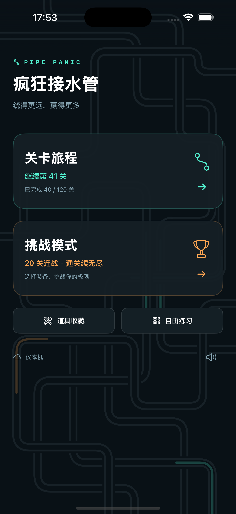
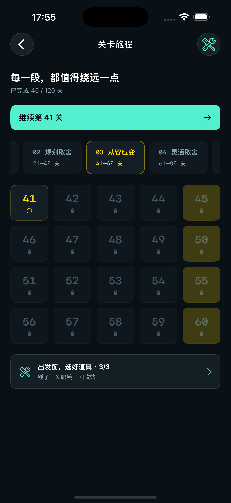

慢慢找到，你的节奏。
沿着 120 关旅程，探索不断变化的目标、章节颜色与道具解锁条件。学会一个技巧，再找到它的新用法。
经典线条 · 每一段，都值得绕远一点
一款关于规划，也关于临场取舍的接水管游戏。赶在水流之前，铺出一条属于你的路线。
已正式上线 App Store · iPhone 与 iPad
THE ART OF THE DETOUR
稳稳到达终点，还是再多绕一个弯？在即将到来的水流前，把下一根管件放在哪里，是这场小小冒险最有意思的决定。
沿着 120 关旅程，探索不断变化的目标、章节颜色与道具解锁条件。学会一个技巧，再找到它的新用法。
从 20 关挑战出发，完成后继续无尽。最多携带 3 件道具，在逐渐加快的水流里试试自己的极限。
选择 12×12、16×16 或 20×20 的棋盘。拖动视野，放下管件，尝试一条从没走过的路线。
LESS NOISE. MORE FLOW.
深色底板，薄荷色的水流，暖橙色的终点。「经典线条」让画面保持简洁，让每一次绕路都清晰可见。
当前 iPhone 界面 · 游戏支持简体中文、繁体中文、英语、日语和韩语。


可以在关卡旅程中达成条件，解锁道具与挑战模式；也可以选择一次性「完整解锁」，获得挑战模式与当前版本的全部道具。关卡进度仍然由你亲手推进。
无订阅。价格以 App 内显示为准。核心玩法可离线游玩；iCloud、Game Center 和购买功能需要网络连接。
Pipe Panic 已正式上线。前往 App Store 下载 ↗
免费下载，可选一次性完整解锁。
下载以 Apple 账户所在商店地区为准，当前暂未在中国大陆和越南提供。